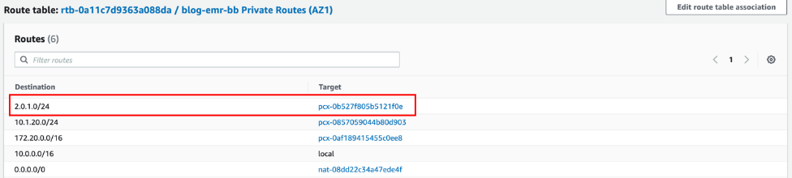

Configure networking (for administrators)
This section provides information about how administrators can configure their network to allow communication between Amazon SageMaker Studio notebooks and an Amazon EMR cluster.
The networking instructions vary based on whether SageMaker Studio and Amazon EMR are deployed within a private Amazon Virtual Private Cloud (VPC) or communicate over the internet.
By default, SageMaker Studio runs in an AWS managed VPC with internet access. When using an internet connection, Studio accesses
AWS resources, such as Amazon S3 buckets, over the internet. However, if you have security
requirements to control access to your data and job containers, we recommend that you
configure SageMaker Studio and Amazon EMR so that your data and containers aren’t accessible
over the internet. To control access to your resources or run SageMaker Studio without
public internet access, you can specify the VPC only network access
type when you onboard to Amazon SageMaker Domain. In
this scenario, SageMaker Studio establishes connections with other AWS services via
private VPC
endpoints. For information about configuring SageMaker Studio in
VPC only mode, see Connect SageMaker Studio notebooks in a VPC to external
resources..
The first two sections describe how to ensure communication between SageMaker Studio and an Amazon EMR cluster in VPCs without public internet access. The last section covers how to ensure communication between SageMaker Studio and Amazon EMR using an internet connection. Prior to connecting SageMaker Studio and Amazon EMR without internet access, make sure to establish endpoints for Amazon Simple Storage Service (data storage), Amazon CloudWatch (logging and monitoring), and Amazon SageMaker Runtime (fine-grained role-based access control (RBAC)).
-
If your Amazon SageMaker Studio and Amazon EMR cluster are set up in different VPCs in the same AWS account or in different accounts, see Studio and Amazon EMR are deployed in separate VPCs.
-
If your Amazon SageMaker Studio and Amazon EMR cluster are set up in the same VPC, see Amazon SageMaker Studio and Amazon EMR are in the same VPC.
-
If you chose to connect Amazon SageMaker Studio and Amazon EMR cluster over public internet, see Amazon SageMaker Studio and Amazon EMR communicate over public internet.
Studio and Amazon EMR are deployed in separate VPCs
To allow communication between SageMaker Studio and an Amazon EMR cluster when they are deployed in different VPCs:
-
Start by connecting your VPCs through a VPC peering connection.
-
Update your routing tables in each VPC to route the network traffic between Studio subnets and Amazon EMR subnets both ways.
-
Configure your security groups to allow inbound and outbound traffic.
The steps are similar, regardless of whether Amazon SageMaker Studio and the Amazon EMR cluster are deployed within the same AWS account (Single account use case) or different AWS accounts (Cross accounts use case).
-
VPC peering
Create a VPC peering connection to facilitate the networking between the two VPCs (SageMaker Studio and Amazon EMR).
-
From your SageMaker Studio account, on the VPC dashboard, choose Peering connections, then Create peering connection.
-
Create your request to peer the Studio VPC within the Amazon EMR VPC. When requesting peering in another AWS account, choose Another account in Select another VPC to peer with.
For cross accounts peering, the administrator must accept the request from the Amazon EMR account.
When peering private subnets, you should enable private IP DNS resolution at the VPC peering connection level.
-
-
Routing tables
Send the network traffic between SageMaker Studio subnets and Amazon EMR subnets both ways.
After you establish the peering connection, the administrator (on each account for cross-account access) can add routes to the private subnet route tables to route the traffic between the notebooks and the cluster subnets. You can define those routes by going to the Route Tables section of each VPC in the VPC dashboard.
The following illustration of the route table of a Studio VPCsubnet shows an example of an outbound route from the Studio account to the Amazon EMR VPC IP range (here
2.0.1.0/24) through the peering connection.The following illustration of a route table of an Amazon EMR VPC subnet shows an example of return routes from the Amazon EMR VPC to Studio VPC IP range (here
10.0.20.0/24) through the peering connection.
-
Security groups
Lastly, the security group of your Studio domain must allow outbound traffic, and the security group of the Amazon EMR primary node must allow inbound traffic on Apache Livy, Hive, or Presto TCP ports (respectively
8998,10000, and8889) from the Studio instance security group. Apache Livyis a service that enables interaction with a Amazon EMR cluster over a REST interface.
The following image shows an example of an Amazon VPC setup that enables SageMaker Studio notebooks to provision Amazon EMR clusters from AWS CloudFormation templates and then connect to an Amazon EMR cluster within the same AWS account. The diagram provides an additional illustration of the required endpoints for a direct connection to various AWS services, such as Amazon S3 or Amazon CloudWatch, when the VPCs have no internet access. Alternatively, a NAT gateway must be used to allow instances in private subnets of multiple VPCs to share a single public IP address provided by the internet gateway when accessing the internet.
![Architectural diagram illustrating an example of a simple Amazon VPC setup
that enables SageMaker Studio notebooks to provision Amazon EMR clusters from
AWS CloudFormation templates and then connect to an Amazon EMR cluster within the same AWS
account. The diagram provides an additional illustration of the required
endpoints for a direct connection to various AWS services, such as Amazon S3 or
Amazon CloudWatch, when the VPCs have no internet access. Alternatively, a NAT gateway must be used to allow instances in private subnets
of multiple VPCs to share a single public IP address provided by the internet
gateway when accessing the internet.](../../../images/sagemaker/latest/dg/images/studio/emr/studio-notebooks-emr-architecture-singleaccount-vpcendpoints.png)
Amazon SageMaker Studio and Amazon EMR are in the same VPC
If Amazon SageMaker Studio and the cluster are in different subnets, add routes to each private subnet route table to route the traffic between the notebooks and the cluster subnets. You can define those routes by going to the Route Tables section of each VPC in the VPC dashboard. If you deployed Amazon SageMaker Studio and an Amazon EMR cluster in the same VPC and the same subnet, you do not need to route the traffic between the notebooks and the cluster.
Whether or not you needed to update your routing tables, the security group of
your Studio domain must allow outbound traffic, and the security group of the
Amazon EMR primary node must allow inbound traffic on Apache
Livy, Hive,or Presto TCP ports (respectively 8998,
10000, and 8889) from the Studio instance security
group. Apache Livy
Amazon SageMaker Studio and Amazon EMR communicate over public internet
By default, SageMaker Studio provides a network interface that allows communication
with the internet through an internet gateway in the VPC associated with the
SageMaker Domain. If you choose to connect to Amazon EMR through the public internet, your
Amazon EMR cluster needs to accept inbound traffic on Apache
Livy, Hive,or Presto TCP ports (respectively 8998,
10000, and 8889) from its internet gateway. Apache Livy
Keep in mind that any port on which you allow inbound traffic represents a potential security vulnerability. Carefully review custom security groups to ensure that you minimize vulnerabilities. For more information, see Control network traffic with security groups.
Alternatively, see Walkthroughs and whitepapers for a detailed walkthrough of how to enable Kerberos on Amazon EMR, set the cluster in a private subnet, and access the cluster using a Network Load Balancer (NLB) to expose only specific ports, which are access-controlled via security groups.
Note
When connecting to your Apache Livy endpoint through the public internet, we recommend that you secure communications between Amazon SageMaker Studio and your Amazon EMR cluster using TLS.
For information on setting up HTTPS with Apache Livy, see Enabling HTTPS with Apache Livy. For information on setting an Amazon EMR cluster with transit encryption enabled, see Providing certificates for encrypting data in transit with Amazon EMR encryption. Additionally, you need to configure Studio to access your certificate key as specified in Connect to an Amazon EMR cluster over HTTPS.